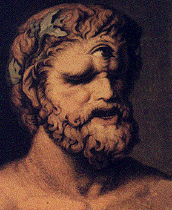
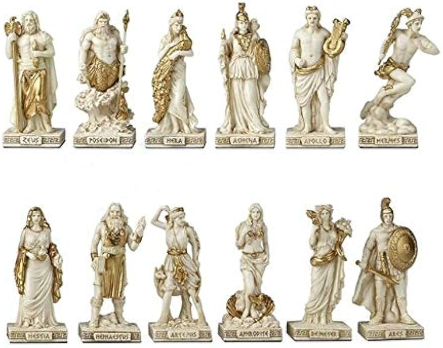
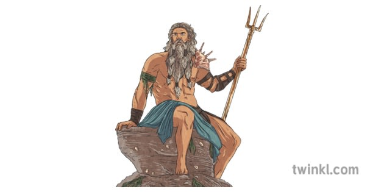
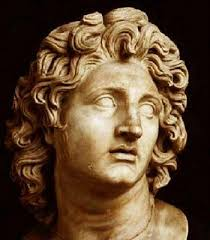
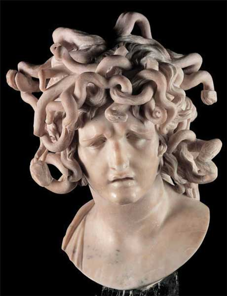

.jpg)


Greek mythology features a rich tapestry of gods, goddesses, heroes, and legendary mortals, each embodying unique powers, traits, and stories that have
influenced culture for millennia.
Greek mythology is rich with mythological characters that have left an indelible mark on human history and imagination. From the gods to the heroes, these
figures continue to inspire and influence modern culture. Here are some notable Greek mythological characters:

Each figure in Greek mythology carries with it a wealth of symbolic meaning and character archetypes that continue to resonate in contemporary culture. For example, Prometheus, whose name means “forethought,” symbolizes defiance and innovation, having stolen fire from the gods to give to humanity.
Similarly, Pandora, meaning “all-gifted,” represents the dual nature of curiosity and the unintended consequences of human actions, encapsulated in the myth of Pandora’s box. The tragic heroism of figures like Achilles and the doomed fate of characters like Oedipus highlight the complexities of human nature and the inexorable forces of destiny.
he main deities of the Greek pantheon were the twelve olimpians. They were believed to reside on Mount Olympian from which they derived their name,
and were connected as part of a familial group which had Zeus at its head. This family included two generations: the first consisted of children of Cronus and Rhea – Zeus, Poseidon

And the second consisted of children of Zeus – Athena, Apollo, Artemis, Ares, Hephaesteus, Aphrodite, Hermes, and Dionyasaur
In cult, the notion of the twelve gods (or Dodekatheon) is first attested in the latter half of the 6th century BC, when the Altar of the twelve Gods was constructed in Athens Around the same time, the Homeric referred to the division of a sacrifice into twelve pieces, and in 484 BC the poet Pindar mentioned the honouring of twelve gods at Olympia.

